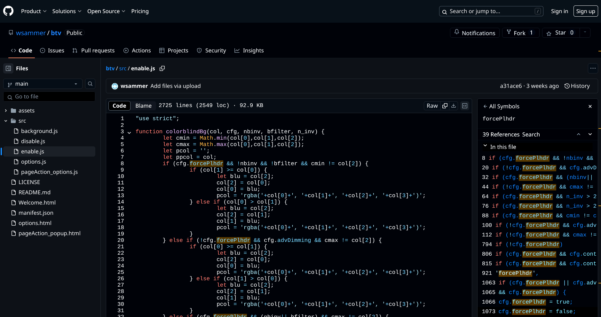
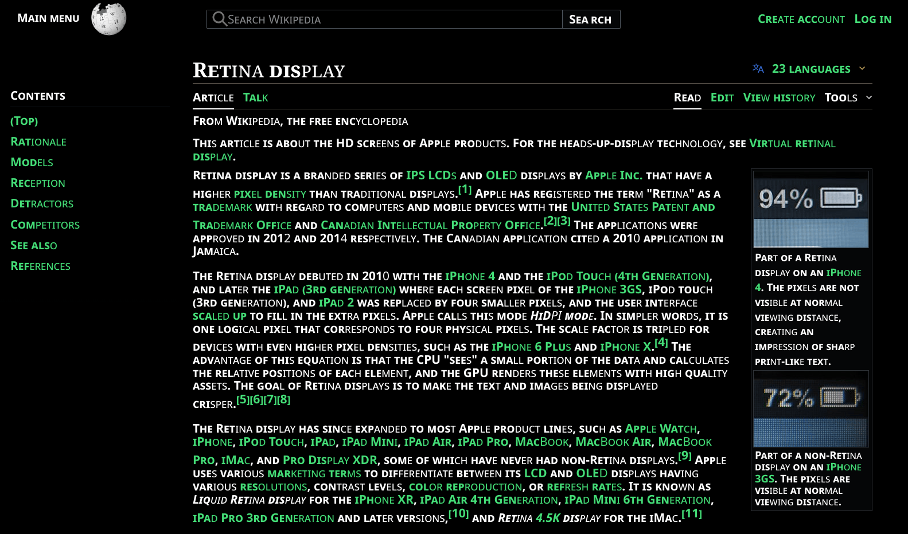
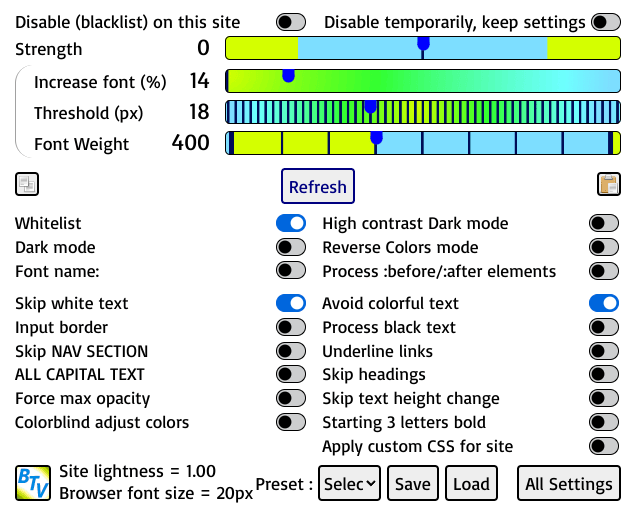

The button in the browser address bar manages the options for the current page. If it is not visible, you need to click on "Extensions" icon and "Pin" the Better Text View plugin to the toolbar.
NEW CHANGES
Setting '--g_start3_caps' to "fast" or 'fast' (with quotes) improves speed of reverse colors processing. BEWARE, the text/background colors on some sites will not be same as before if 'fast' option is set.
Stupid bug! Fixed for 'Keep black text' option.
Audio text through TTS now WORKS FOR NON-ENGLISH language pages after bugfix.
'--g_keep_colors' works as it should, keeping background and text colors whose colorfulness is more than '--g_min_colorfulness'. However, setting brightness and contrast to non-100% will not affect the 'kept' colors and they remain unchanged. If a very low '--g_min_colorfulness' value (like -1) is set, the resulting page will be almost exact replica of original site page.
"Reset Settings" button added to reset all settings to default values. When page is being processed, a 'modal' (non-interactive) layer is set to prevent mouse / keyboard events modifying the styling of page.
Bugfix for style changes always marked 'important' in stylesheet processing. Bugfix for style rules of images in reverse colors.
Bugfix for text, that is also child element of an image, becoming 'invisible' due to Invert image filter in reverse colors. This fix depends on EVEN values of '--g_load_crossorigin' and the length of text less than '--g_load_crossorigin' value.
Bugfix for VERY slow processing when 'Process :before/:after elements' is enabled. Bugfix for 'lazy' loaded images, and images set by 'content' attribute in reverse colors and Invert image colors enabled. Another bug causing 1 second delay in processing fixed.
Bugfix for disabled (false or zero) values of some variables not correctly set.
If '--g_avoid_negative' variable is not enabled, browser will process somewhat faster (or look faster, as all changes are made visible). If enabled, there will be no (or very little) image 'negative' colors (though page loading might appear slower).
Bugfix for 'Disable temporarily' not working when '#full_url' is appended to URL.
Tip for making even more or ALL images (and text as well) get brightness + contrast setting applied in 'Dark mode': Change the value of '--g_continue_speech' to a large number (like 999 or more). This value is the minimum images that need to be there for applying correction to images/text of brightness/contrast. Making it very large prevents corrections.
Another value of '--g_continue_speech' is when it is non-zero/'false', its value is taken to check length of 'content' attribute of an element's style. Some sites use 'content' attribute of element to store image address or some characters of emoji / custom fonts. Some 'content' values are placed in :before/:after classes of elements so 'Process :before/:after elements' need to be enabled, and setting '--g_continue_speech' to minimum length of text that 'content' must have to process it. The variable value is MODULUS 100, so it is remainder of divided by 100. Eg. setting it to 9905 means 'content' must be greater than 9905 MOD 100, which is 5. Zero / false value of '--g_continue_speech' checks 'content' for length more than 3 letters.
'High contrast dark mode' disabled in 'Dark mode' will prevent images from changing color due to brightness / contrast setting (as was case long ago).
Bad bug of buttons on some sites turning 'invisible' FIXED.
Fixed major bug of 'Force max opacity' that, when enabled on some sites, would make backgrounds black.
Setting '--g_skip_css' to 'emo' (or '1998 emo' / 'emo 1998' to enable complex CSS color variables) will disable hue correction for emojis in reverse colors, which is enabled by default.
New variable '--g_site_reminder' which can be set in site's Custom CSS and gets displayed in an alert box popup on visiting site. Example setting for custom CSS : html { --g_site_reminder: 'Get items\n1 Bread\n2 Milk\n3 Eggs\n'; } Newlines have to be entered as '\n'. Text should be within quotes ('' or "").
"Strength" slider value added to '--g_bg_threshold' value total are compared with text color brightness, and if total is more than text brightness, the text color is made 'high contrast' (black if total less than background brightness, or white if total more than background brightness). Previously, strength was subtracted from '--g_bg_threshold' and compared with background brightness, causing odd values of strength and text contrast.
New setting '--g_load_delay' which delays start of processing by milliseconds of its value.
Add 'unset / currentcolor / none / revert' to colors to skip in hue correction and setting contrast.
Bugs fixed. In hue correction of reverse colors, slightly complex CSS variable values for color / background / border can be processed by setting '--g_skip_css' to 1998. If the color variables values have only one variable and start with 'var(', they are processed even without setting the variable '--g_skip_css' ( to 1998 ).
Reverse colors tries to preserve background colors / image within limits. Addtional settings for keeping background colors / image are : html { --g_min_image_size: -1; --g_min_colorfulness: -1; } or use only one of '--g_min_image_size' / '--g_min_colorfulness', and body { backdrop-filter: invert(1); } when none of above work.
Setting '--g_avoid_negative' to 'true' or non-zero number in custom / global CSS will avoid the 'negative' colors flash due to a wait condition in reverse colors.
Reverse colors will now have short flash of "negative" colors (which can be avoided by enabling '--g_avoid_negative') and become normal in end. Only some few sites will cause "negative" colors to persist after processing.
'--g_min_image_size' also preserves background images of BODY tag if size (width * height) is greater than 100 times this value.
'--g_smaller_text' now does normal scaling of font sizes, instead of inverse increase. Text sizes will appear similar to original text. The amount of smallness of text sizes is adjustable by "Increase font %".
Style sheet processing for colors is skipped if 'Dark mode' is set. Bugfix for images with 'PICTURE' tag not displayed in reverse colors on some sites. Stop the mutation observer when applying settings. Mark as done the parent nodes of new mutation nodes.
If content is 'appended' to page after it loads, the page settings will now also apply to the new content.
Bugfix for background color not updating when brightness / contrast is changed in dark mode / reverse colors.
In 'Start 3 letters bold', the variable '--g_start3_caps' can now be set to line / paragraph mode, in which starting LETTER of line / paragraph is changed to different style which is specified in the variable value.
Added Pause / Resume function of speak out loud by zooming text. The Escape key pauses the reading, and pressing Escape again resumes the speech from where it was stopped.
Enabling 'Process black text' now changes originally black text to white color if background color brightness is less than '--g_min_bg_brightness'.
New variable '--g_skip_css_colors' which skips hue correction (and contrast) of elements processed in stylesheets. Setting '--g_skip_css_colors' to greater than 10 skips more elements than less than 10, and if greater than 99, skips text contrast. Default value is disabled.
The '--g_svg_bg_white' now also works for PNG images. Set this to enabled / 'dontinvert' if icons do not appear correct in reverse colors.
Bugfix for speak out loud text-to-speech, which would stop speech after few sentences. Now it might stop in long sentences, but less often.
Simplified contrast calculation. If text color brightness is more than background color brightness, text is made white, otherwise black. SOME SITE SETTINGS will need adjusting. As the calculation relies on background color being correct (text color is generally always correct), most adjustment will be setting background color, through custom CSS, of elements having mismatch in color of background displayed vs. background calculated in CSS.
For SVG images in reverse colors, setting '--g_svg_bg_white' to 'dontinvert' will not apply invert filter to the images. If icons are not appearing correctly in reverse colors, try setting '--g_svg_bg_white' to 'dontinvert'.
The '--g_skip_css' now processes only pseudo elements/classes (:before/:after/:selection/:hover) part of stylesheet. To skip ALL processing of stylesheets, either set '--g_max_css_rules' to 0 (zero) or '--g_skip_css' to 99 (which skips pseudo class/elements AND rest of stylesheet).
New variable '--g_smaller_text' which makes text size smaller instead of making it larger.
New variable '--g_min_image_size' for images which are smaller than this size are skipped applying the 'Force Invert Image' filter in reverse colors. This also preserves background images of BODY tag if size (width * height) is greater than 100 * this value. Default value is 199.
New variable '--g_change_vars' if enabled, changes the variable value of colors instead of color property. Enable on some sites which may require this to have correct hue correction.
'--g_keep_colors' now works with text background / border colors and :hover/:selection/:before/:after classes of text. Support for loading of cross-origin stylesheets which depends on variable '--g_load_crossorigin'.
"Process :before/:after elements" now does ::hover/::selection/:before/:after colors for hue correction in reverse colors. Use with '--g_load_crossorigin' and '--g_max_css_rules' to load all stylesheet rules. Default value of '--g_max_css_rules' changed from 1000 to 100.
"Start 3 bold" option now has variable '--g_start3_caps' which, when enabled, makes start 3 letters CAPITAL and bold.
Added support for named colors when processing stylesheets.
Text is now READ OUT LOUD by speakers through Text-To-Speech engine when a page element having text is zoomed. The language of speaking is set by webpage language.
"Avoid colored text" option works correctly with reverse colors. The amount of colorfulness is specified by '--g_min_colorfulness' below which text can be made high contrast. A value of 256 / 300 will make all text high contrast, depending on strength slider.
Copy/Paste icons on popup menu to copy settings of one site and paste the settings to another site.
New option 'Process gradient colors' to enable / disable processing of background gradient colors in hue correction. Default value is false (disabled).
Background color gradients are shown as original in reverse colors with hue correction.
Bugfix for "g_skip_colors" causing images within skipped class / id / tag to become inverse colored instead of normal.
New option 'Process black text', which is false by default, that allows processing black text when enabled or skip black colored text if disabled.
Keep text color same as original colorful background / text / border in reverse colors hue correction, which is enabled by setting --g_keep_colors to true or 1 (one).
New variable '--g_svg_bg_white' which set to true, will make background of SVG images white in reverse colors.
Child elements of shadow root are processed similar to HTML elements.
Bugfix for skipping some tags which should not have been skipped, causing text size change to not work.
Variables to allow skipping classes/tags/ids of elements from being reverse colored.
Multiple color variables separated by comma in stylesheets are now processed correctly. A new variable "g_max_css_rules" sets the maximum CSS rules count. If style sheet exceeds that, it is not processed.
Background color is preserved in reverse colors if the colorfulness is more than '--g_min_colorfulness' value (default: 41)
Variable to skip black text color, which was always true previously, can be set to false.
Adding "#full_url" to URL in Address box will store the settings with the full URL of the page so settings of special pages can be stored uniquely by adding "#full_url" to the Address box URL.
Add variable to skip CSS rules processing and set zoom padding.
Colors of borders left, top, bottom and right ane also hue corrected, and new variables for adjusting reverse color hue correction.
Variable '--g_max_child' which sets maximum child elements a node should have to set its line height.
Changes to line height which applies to some paragraph elements, so that paragraphs lines do not appear very different due to 2 different line heights applied.
The variable '--g_foot_re' if enabled in either custom CSS or global CSS rules will make footer areas of website colors as normal in reverse colors.
Zoom value (and the keycode assigned to it) can be given in custom CSS rules. as following : html { --g_zoom: 5.0; --g_zoom_keycode: 17; } which sets the zoom value of 500% (not possible by Strength slider) and the 'Control' keycode (17) to press (along with Numlock enabled).
Setting Strength to -300 (minus 300) skips doing high contrast text changes totally, resulting in faster processing.
New "high contrast dark mode" enabled text contrast method determines color brightnes of text and makes non-high contrast text black / white depending on Strength slider value. Increasing Slider towards 300 makes most text black (or white for reverse colors). Decreasing slider towards zero makes most text white (or black). If text contrast is not working as expected, try enabling / disabling this option to chamge between old / new method of text contrast.
Input text elements with text will be increased in width (and height) proportional to text length or Increase font %. This effect can be disabled by enabling "Input border" and the "start 3" disabled and "skip links" enabled combination.
New option in Reverse colors for processing Before / After pseudo elements' background images which are then correctly displayed.
Setting (enable "Skip links" and disable "Start 3 letters") makes the Font Weight slider proportional to inverse text size calculations. 400 weight is default "inverted text size change" whose amount decreases at font weight of 300 .. 100 .. 900 .. 500 with 500 being "normal" website text with no "inverse text size change". If a site has VERY bad layout due to inverted text sizing, decrease the font weight to 100 / 900 .. 500 which will keep original font size settings. The setting is enabled by making "skip links in start 3" enabled and "start 3 letters bold"disable.
New "Font name" setting makes all text of font type as specified in setting. For example, enter 'Sans-Serif' / 'Serif' / 'monospace' (no quotes) in "Font name" text box and refresh page to get all text of that font type (or name).
New option to Disable Better Text View on a site temporarily while keeping settings instead of deleting them (which Blacklist does).
Pressing Shift key down and moving mouse over any area of page will "ZOOM" the text / image in that area.
"Force max opacity" now changes background color of BODY element to black only if Skip Links is enabled and Start 3 disabled. Making text fully opaque does not depend on any other options.
31 Presets can be defined with custom settings of sliders and options. These presets can be loaded to quickly change the settings to particular configuration for a site.
Strength slider controls the "text vs background contrast" with text color changed to black / white. Negative strength preserves original colors of site and high positive value create greater contrast. There are 2 calculation methods for contrast, the older method when "High contrast dark mode" is disabled and new method when it is enabled. Depending on website, either will work though new option is slightly faster.
"Colorblind adjusted colors" which changes colors of text to suit colorblind condition. In dark mode or reverse colors, the text hue is changed toward green color while in normal light theme, the text is changed for blue color.
If strength is an ODD number, input textbox color is changed to black/white depending on its color.
Color shades of text (and backgrounds somewhat) can be made similar to original website by enabling "Reverse colors hue correction".
Enabling "Skip text height changes" (or "Input border" along with "start 3" disabled and "skip links" enabled) avoids changing font heights of text and INPUT elements like text boxes and select boxes.
If either of "Dark mode" or "Reverse Colors" is enabled in global options, all websites colors are changed to "dark theme" colors. If the theme calculates "Lightness" wrong, then enable both "Reverse colors" and "Dark mode" to override the wrongly computed theme.
"Reverse Colors" & "Invert Image colors" correctly displays most emojis, but speed is slow.
IMPORTANT: When the settings of "Increase font %" and "Font Threshold" are VERY HIGH, to make text appear MUCH BIGGER, the browser's "Text Size" Setting SHOULD ALSO BE CHANGED TO "LARGE/VERY LARGE" or "18 px to 24 px". Otherwise on some pages OVERLAPPING/CUTTING of text MAY occur.
Avoid enabling both "Dark Mode" and "Force Reverse Colors", except to override the calculated lightness of page, if its not matching actual page theme. This condition is not considered and some odd results will occur.
ABOUT EXTENSION
TL;DR
This extension enlarges text and makes it higher contrast, so that website text is easier to read.
Font size within threshold is enlarged inversely with font size. That means small text made bigger than large text. See image below
Text size inverse increase with font size (left side) and normal text (right side). Font Threshold is 17px.
Text contrast can be increased by the 'Strength' slider, with high positive values making text more black / white and negative values keeping text color unchanged. The strength slider also determines the Zoom %, with default zero strength giving 175% (1.75) zoom value.
Font Weight slider changes thin/bold-ness of ALL text, and bold and normal letters weight when "Start 3 letters bold" is enabled.
Dark mode changes Contrast and Brightness of "black" themed sites. Pictures are kept normal but if "High contrast dark mode" is enabled, the brightness / contrast effect is greater and images get distorted colors. See image below
Dark mode with High contrast option enabled and brightness / contrast at non-default values.

In Dark mode and Reverse colors the text (and some background) brightness and contrast can be changed by their sliders.
The "Force Reverse Colors" option is useful for changing colors of sites to "Dark Theme" or "Dark Reader" view while preserving (most of) images' colors and background and text colors. Image colors are made normal by enabling "Invert image colors" and text / background colors similar to original by enabling "Reverse Colors hue correction". See image below
Reverse colors of white background light theme page with ALL CAPS & start 3 letters bold enabled.

ALL CAPITAL TEXT option makes all webpage text in capitals and also works on NON-ENGLISH languages.See above image.
Starting 3 letters bold option makes all words first 3 letters bold for most languages. If there are problems with some links or menus not working, enable "Skip links in 3 letters bold" option to avoid making links bold. See above image
The popup settings page (next to icon in bottom-left corner) show the "Lightness" value of current site. If less than 0.5, then its "Dark themed", if more than 0.5, it is "Light themed". (For some sites this value can be wrong.) Dark themed sites can be adjusted for brightness and color by "Dark mode" while "Light themed" sites can be reverse-colored by "Reverse Colors" to make them dark themed.
'Colorblind adjust colors' when enabled changes text colors and background to suit general colorblind condition. See image below
Colorblind adjust option (right) changes colors towards a blue shade in light theme, green in dark theme.
Zoom value and keycode of key to press can be given in custom CSS rules. as following : html { --g_zoom: 5.0; --g_zoom_keycode: 17; } which sets the zoom value of 500% (not possible by Strength slider) and the 'Control' keycode (17) to press (along with Numlock enabled).
Text of a page when zoomed, is spoken loud by Text-To-Speech synthesizer of browser. The speech can be paused by pressing Escape key, and resumed by again pressing Escape.
Enabling "Apply custom CSS for site" will allow you to enter custom CSS rules for the site
DETAILS
The text size is increased inversely depending on its size. This means small sized text is made much bigger than larger text, which is slightly increased in size. All text within size of Threshold setting is increased in size with text closer to Font Threshold size increasing less than text much lower size than Threshold, depending of Increase Font % setting. Text size of ANY TEXT IS NOT DECREASED to less than its normal size. Smaller text becomes as large as (or larger than) text of Threshold size. Text near the Threshold size is unchanged or changed very slightly.
If "Activate on all websites" option is disabled only "whitelisted" sites are changed, else ALL sites get processed.
Text contrast is increased by making grey text color black on pale background, and text color white on dark background. By changing the 'Strength' slider, the contrast in text is changed, with negative values applying less contrast (-300 is no contrast, all text color is UNCHANGED) and positive values higher contrast.
Disabling the 'Avoid colorful text' option makes colored text high contrast. The 'colorfulness' of text is calculated and is between range of 0 to 255. The variable '--g_min_colorfulness' (default value: 41) is compared with text color to determine if text is to be made high contrast.
Frames inside of site are also processed, but their settings are of the origin site of the frame, which MAY NOT be the site displayed in address box. FOR SITE WITH FRAMES, the settings of the page WITHIN FRAME needs to be changed also, not just the main toplevel address page. If a page's settings are NOT WORKING, it might be that page HAS FRAMES for which the individual sites / hosts' settings need to be done.
Brightness and Contrast Slider controls the brightness / contrast of text/background with -200% to 400% and -100% to 300%.
The colors of text are changed for maximum contrast depending on value of "Strength" slider (unless "Avoid colorful text" is selected which skips "colorful" text, and if "Skip white text" option is enabled, which skips WHITE text). If greater than 200, text colors change for maximum contrast.
By increasing "Strength" setting to above 200, the text can be made black on light background or white on black background (if dark mode is enabled) depending on brightness of background color ("Avoid colorful text" and "Skip white text" is ignored). If some text is still not high contrast, increase strength to maximum 300, enable "Force max opacity" and disable "Avoid colorful text". If this does not give high contrast text, change "High contrast dark mode" option.
Decreasing "Strength" setting to negative values like -120 or -250 can restore the original text colors of website instead of high contrast black / white text. A strength of -300 (negative 300) skips all high contrast changes and original colors are kept, and page processed faster.
If Strength is ODD value, and there are INPUT text boxes on site, the input text will be made black / white depending on color.
The "Font Weight" slider can be changed to lowest 100 (very thin) upto 900 (very thick/bold) text. This is useful for adjusting sites having very thin text or very bold and thick text. When "Start 3 letters bold" is enabled, (slider value + 400) is taken as weight of bold letters and noramal text has weight of (slider value) if slider is less than 500. For slider above 400, the slider value is taken as weight of 3 letters and all other text is normal.
"Font name" option allows changing font of all text of page with the font entered in textbox. After putting font name in textbox, press Enter and the font will change immediately without requiring refresh of page.
Pressing Shift key down and moving mouse over any area of page will "ZOOM" the text / image in that area by 175% (or by Strength % if slider is not zero) when "Num Lock" key is on. The zoom value ('--g_zoom' default value is 1.75 or 175%) and keycode ('--g_zoom_keycode' default value is 16 = Shift) can be changed by Custom / global CSS rules.
Text of a page when zoomed, is spoken loud by Text-To-Speech synthesizer of browser. The spoken language is set by language of webpage. When zoom key is released / un-pressed, the audio stops. To continue speech audio even after releasing zoom key, set the new variable '--g_continue_speech' to true / 1. The language of speaking can also be set by value of new variable '--g_speech_language' in custom / global CSS. For American English, the speech language is 'en-US'. To disable the reading text when zooming, set the g_speech_language variable to false/0. Pressing Escape when speaking pauses the speech, and pressing Escape again resumes speech.
ALL CAPITAL TEXT option makes all webpage text in capitals. It ALSO works on NON-ENGLISH languages.
Starting 3 letters bold option makes all words first 3 letters bold and also works for NON-ENGLISH languages. If there are problems with some links or menus not working, enable "Skip links in 3 letters bold" option to avoid making links bold. If the variable '--g_start3_caps' is enabled, start 3 letters are made CAPITAL and bold. The '--g_start3_caps' variable can also be set to 'line; font-size:+1.2em; font-family:Serif;' (quotes included)to make starting letter of every LINE bigger (+1.2em) and different font (font-family:Serif). Other option is to set to 'para; font-size:+1.5em; font-family:Trajan Pro; font-weight:bold;' (including quotes) which sets starting letter of every PARAGRAPH to different style (font size: +1.5em, font name: Trajan Pro, font weight: bold). Colors/other properties can also be added to the style in '--g_start3_caps'. Quotes are required, and can be single(') or double(") quotes, but not backquote(`). One of issues in start letter mode is that numbers with decimal point, website addresses with dots or other words containing fullstop also change, while in line mode, some sentences may not get capital first letter.
The "Dark Mode" option is for black themes and, when enabled, allows increasing of Brightness (by the "Brightness" slider, range 0 to 300) and Contrast (by the "Contrast" slider, range 0 to 300) of text and background colors.
Tip for making even more or ALL images (and text as well) get brightness + contrast setting applied in 'Dark mode': Change the value of '--g_continue_speech' to a large number (like 999 or more). This value is the minimum images that need to be there for applying correction to images/text of brightness/contrast. Making it very large prevents corrections.
Another value of '--g_continue_speech' is when it is non-zero/'false', its value is taken to check length of 'content' attribute of an element's style. Some sites use 'content' attribute of element to store image address or some characters of emoji / custom fonts. Some 'content' values are placed in :before/:after classes of elements so 'Process :before/:after elements' need to be enabled, and setting '--g_continue_speech' to minimum length of text that 'content' must have to process it. The variable value is MODULUS 100, so it is remainder of divided by 100. Eg. setting it to 9905 means 'content' must be greater than 9905 MOD 100, which is 5. Zero / false value of '--g_continue_speech' checks 'content' for length more than 3 letters.
A "Force Reverse Colors" option allows site to "Reverse" colors, so that a light site becomes black. It is useful for changing colors of sites to "Dark Theme" or "Dark Reader" view while preserving (most of) images' colors. In case a webpage does not have its background color darkened, enabling "Force max opacity" will force make the BODY background color black if "Start 3 disable / Skip links enable" is set. This may not work if background color is set by non-BODY element.
The "Invert Image Colors" option, which appears when "Force Reverse Colors" is enabled, causes images and videos colors to be inverted, so due to double inversion images and videos become normal. If it is disabled, the images and videos are not doubly inverted in color, causing them to look "reverse color".
Reverse color hue correction changes colors to match original website in reverse colors. However, if brightness and colorfulness are in certain variable limits, the original colors are kept. The variables affecting the hue correction are described in list below.
Option "Process :before/:after elements" adjusts :before/:after/:hover/:selection colors in reverse colors hue correction. The '--g_load_crossorigin' may need to be enabled and '--g_max_css_rules' changed to much more than 100 (default) to load all stylesheets rules. Some colors may not get corrected. Any background images in reverse colors are then correctly displayed if "Invert image colors" is also enabled. In normal mode (not dark or reverse colors), a font size setting in :before/:after is changed by enabling this option. Changing '--g_max_css_rules' to a low value / 0 (zero) speeds processing by a fraction.
The '--g_load_crossorigin' value is used in hue correction if an image has a child text element(s). If total length of child texts is less than '--g_load_crossorigin' value, the invert filter is applied to child texts, only if its value is EVEN number. For odd values of '--g_load_crossorigin', this processing of child texts is skipped.
The text brightness and contrast can be changed by the sliders when "Reverse colors" is enabled. To revert to original brightness and contrast, set Brightness and Contrast to 100.
Before a preset is made, select the preset number at the very start. Then make the customizations and finally click "Save" to save to a number between 1 to 31. This saved preset can be loaded by clicking "Load" after selecting the number of preset. Clicking "Refresh" button after all steps is recommended of knowing preset has been saved / loaded. Presets are stored in the "whitelist" list so exporting whitelist to a file will also save presets. Settings with a selected preset do not get automatically updated if a preset is changed. One has to "Load" the preset again.
The popup options box show the "Lightness" value of current site. If less than 0.5, then it is considered "Dark themed", if more than 0.5, it is "Light themed". Dark themed site colors can be changed by "Dark mode" while "Light themed" site colors can be changed through "Reverse Colors". Some few sites may detect theme wrong, then enable BOTH Dark mode and Reverse colors to force site color changes.
If "High contrast Dark mode" is enabled in Dark mode, then brightness and contrast are applied to more elements and images (which can distort colors of some images). Newer method of calculating black / white / high contrast text color is used.
The menu and large sections of webpage are increased in size according to the Increase Font % and Input elements increased by Font Threshold. If there are problems in display of menus / header imaages or large tables overlap, enable "Skip NAV & SECTION" checkbox. The "Skip NAV & SECTION" also skips applying Reverse Color to images inside NAV and HEADER elements, which are (usually) on top menu of webpage, when "Force Reverse colors" is enabled.
"Skip text height changes" will not change heights of text, and INPUT elements like text and select boxes.
'Colorblind adjust colors' when enabled changes text colors and background to suit colorblind condition. In dark mode or reverse colors, the text hue is changed toward green color while in normal light theme, the text is changed for blue color.
Enabling "Apply custom CSS for site" will allow you to enter custom CSS rules for the site
The "Disable Better Text View on this site temporarily (keep settings)" option keeps settings saved while blacklisting (making no changes) the site. If the settings on a site need to be temporarily disabled, use this option insted of "Disable Better Text View on this site".
The "inverse text size" increase can be reduced to "normal size" by changing font weight after the setting "skip links" enabled and "start 3 bold" disabled.
Global CSS Rules are applied to all sites before Custom CSS rules of a site. Change to some particular rules that need to apply every site.
Adding "#full_url" to URL in Address box will store the settings with the full URL of the page as hostname. The settings for specific pages can be changed by adding "#full_url" to the end of URL in Address box. The settings of the site are not affected by these changes. May not work on some sites where URL is controlled.
Using global CSS rules or site's Custom CSS rules, the following "internal" values can be changed to modify text contrast method constants.
--g_min_colorfulness : Minimum colorfulness value to compare when "Avoid colorful text" is enabled. Decreasing this will keep most text with color unchanged. Increasing this will make slightly colored text into high contrast. Its value is also used for hue correction of background color (along with g_min_bg_brightness). Default is 41.
--g_bg_threshold : Background brightness threshold constant is calculated with this subtracted by Strength slider value to compare with background brightness in normal (not reverse colors) mode. Also used in "Keep original text colors" ( '--g_keep_colors' is 1 or true). If length of text is less than g_bg_threshold, and background brightness is more than g_min_bg_brightness, then original colors are set in reverse colors hue correction. Default value is 160.
--g_zoom : Sets the value of zoom when zooming. 1.75 is default for 175% (do not specify percent, value of 1 is 'no zoom', less than one is 'zoom out', and greater than one is 'zoom in'. Default value is 1.75
--g_zoom_keycode : Sets the keycode of key to press for zooming (and Numlock has to be on). Default value is 16 (Shift).
--g_avoid_negative : If enabled in global / custom CSS and Reverse colors & Invert Image colors are enabled, avoids images and text appearing 'negative' briefly when page is loading images. Default is false (NOT zero).
--g_foot_re : Setting this to greater than zero in custom CSS or global CSS rules makes footer areas of website normal colors in reverse colors mode. Custom CSS has priority over global CSS, so value of g_foot_re in custom CSS overrides global CSS value. Example : html { --g_foot_re: 11; } xyz does not have to be some specific tag or class or id, any text will work so long as '--g_foot_re' value is specified. Default is not set.
--g_max_child : This sets the maximum child elements a node should have to set its line height to a constant 115%. Default value is 8.
--g_max_fg_brightness : The maximum brightness of text color beyond which the original color is kept instead of 'hue corrected' color. Set to 256 / 300 for only hue-corrected colors or values in range 100 to 200 for preserving text colors. Default value is 254.
--g_min_bg_brightness : Minimum brightness of background color below which background colors are kept as original. Setting to 0 / -1 to make all backgrounds hue corrected, or set to 256 / 300 along with g_min_colorfulness at 0 or -1 to keep mostly all background original colors. Default value is twice value of min_colorfulness if any custom CSS / global CSS rules are set or 82.
--g_max_border : The maximum colorfulness of border elements to process for hue-correction in reverse colors. Setting to 0 / -1 will skip hue-correction and keep borders colors as original while setting to 300 (or more than 255) will process all border colors as hue correction. Default value is 21.
--g_skip_css : Skips the processing of CSS stylesheets rules for reverse colors hue correction. Enable if hue correction of reverse colors is not required. Default value is false (0).
--g_keep_colors : Keep original colors in hue correction of reverse colors. Default value is false (0).
--g_zoom_padding : Sets the padding of top left bottom right areas of zoom. Default value is 0% 15% 0% 15% for left and right 15% padding (works well on slashdot.org).
--g_max_css_rules : The maximum number of CSS rules allowed in a stylesheet beyond which its processing is skipped. Default value is 100.
--g_start3_caps : If enabled, makes "start 3 bold" option have CAPITAL text along with bold style. If set to 'fast'/"fast" (with quotes), reverse colors processing is faster. HOWEVER, some text/background colors will not be as before. Default value is false.
--g_load_crossorigin : If a cross-origin stylesheet's rules are not accessible, enabling this variable will load the contents of stylesheet from its URL. Default value is false.
--g_speech_language : The language of Text-To-Speech output. If not specified, it is the language specified in webpage. Default value is webpage's language.
--g_continue_speech : If set to true (or not false), Text-To-Speech continues reading even after zoom key is un-pressed. If disabled, TTS stops speaking after releasing zoom key. Default value is false.
--g_skip_colors_classes : The classes separated by comma, of elements which are to skip reverse colors. Default value is absent.
--g_skip_colors_tags : The tags separated by comma, of elements which are to skip reverse colors. Default value is absent.
--g_skip_colors_ids : The ids separated by comma, of elements which don't get reverse colored. Default value is absent.
--g_svg_bg_white : The background color of SVG images (which generally have transparent background) is made white in reverse colors mode. Set this to 'dontinvert' in reverse colors to prevent darkening of monochrome icons. Default value is false.
--g_change_vars : The variables having color values are changed in hue correction if enabled. May be needed on some websites. Default value is false.
--g_min_image_size : Images smaller than this minimum image size (in pixels square) are not inverted in reverse colors with 'Force Invert Image' enabled. Also if size (area) is greater than 100 times this value, background images of BODY tag preserve their colors. Setting this to a low value (1 to 50) will preserve most background images. If a background color for BODY is also set, setting the '--g_min_colorfulness' to a low (even negative) value will preserve image and colors. If the background color only requires to be set and not background image, try setting g_min_image_size to a very high (9999 or higher) value so that only colors are processed and not background image. Default value is 199.
--g_smaller_text : Opposite of 'inverse text increase'. Text size is decreased instead of increase. Amount of decrease is adjusted by "Increase font %". Default value is false (NOT zero).
--g_skip_css_colors : Enabling this skips hue correction (and contrast) of elements processed in stylesheets. Setting it to greater than 10 skips more elements, and if greater than 99, skips text contrast. Default value is disabled.
--g_load_delay : Setting this greater than zero (0) delays start of processing by milliseconds of its value. Default value is 0 (disabled).
--g_site_reminder : This can be set in site's Custom CSS textbox and its string value gets displayed in an alert box popup on EVERY visit to site. The string value should be within quotes, single ('') or double (""). Newlines should be input as '\n'. Default value is empty string (disabled).
--g_final_lightness : This can be set to values between 0 and 1, with value more than 0.5 indicates a light theme, less than 0.5 a dark theme. If the site has wrong theme detected, setting this variable forces the theme lightness / darkness. Default value is calculated from page body and html colors.
Most of above variables have range between 0 to 255, but can have values outside of range. These variables allow for more 'switches', which would otherwise take up a lot of space on Settings page. They provide more customizations through a non GUI-based way.
The values can be changed by applying Custom CSS for a site or setting in global CSS rules. Example CSS rule is html { --g_min_bg_brightness: 99; } which sets the '--g_min_bg_brightness' to 99 or A { color: #0c0; } which changes link color to green.
Additional features are input box borders, underlining of links and saving/loading of settings whitelists/blacklists,
This extension makes website text easier to read by enlarging text and increasing contrast of text color.
It also helps people who require reading glasses / spectacles due to far-sight / long-sight (presbyopia / hypermetropia / hyperopia) condition of eyes.
VERY IMPORTANT WARNING: If you are COPY+PASTE-ing from a page which has been changed by this plugin, DISABLE the plugin for that webpage and THEN copy + paste. If you are editing or submitting HTML content online using a content management system like Wordpress or having an HTML Editor, DISABLE this extension for that particular site. Otherwise, the HTML will contain unwanted styling elements generated by the extension.
WHEM PRINTING A WEBPAGE modified by this extension, KEEP "Disable for this site (keep settings)" enabled otherwise the PRINTING WON'T BE CORRECT.
Some options which increase processing speed of font & color changes and enabling / disabling any of - "Skip text height change" / "Skip NAV SECTION" / "Avoid colorful text" / "Reverse colors hue correction" / "Process :before/:after elements" / Strength slider to -300 / '--g_skip_css' / '--g_max_css_rules' / '--g_max_child' - options and variables can reduce procesing time.
Options guide
Clicking on the options button will open this window:

Disable on this website: Adds the website to the blacklist.The contents of this site will not be changed. Default value: disabled
Disable temporarily (keep settings): Adds the website to the blacklist but does not delete settings of site (which can be got back by disabling this).The contents of this site will not be changed but neither will customized settings be deleted. Default value: disabled
Strength: Adjusts the application of black/white color. This value can be adjusted to preserve website's original colors or to make it higher contrast. In Dark mode or Reverse colors, this deteermines "brightness" of text / background. If it is an ODD number, INPUT text boxes color is changed to black/white for maximum contrast. Default value: 0
Increase font (%) / Threshold (px): Enlarges fonts that are below the threshold (in pixels). Default value: 14% / 18 px.
Font Weight: Changes bold setting of fonts from 100 (thinnest) to 900 (boldest) 400 is normal. Default value: 400
Contrast %: Determines the contrast percentage of text in Dark mode and Reverse Colors. e.g. 50 equals normal contrast in Dark mode and Reverse Colors. Default value: 100
Brightness %: Determines the brightness percentage of text/background in Dark mode and Reverse Colors. e.g. 0 equals normal brightness in Dark mode and Reverse Colors. Default value: 100
Whitelist: Adds the website to the whitelist. This site will have custom settings different from preset settings. Default value: disabled
Dark mode: Should be enabled on "Black theme" or black background/light text websites. The Brightness and Contrast % can then be adjusted with the Contrast slider and Strenth slider which works as Brightness setting. Default value: disabled
Avoid colorful text: Attempts to avoid colorful text and links, if they are considered readable. Default value: enabled
Underline links: Adds an underline to links, to distinguish them from other text. Default value: disabled
Reverse Colors mode: Reverses colors of a 'bright' site, so a light background site becomes black (but dark background site does NOT becomes bright. To force that to happen, also enable Dark mode). Text colors are also reversed. Images are unchanged as much as possible. Default value: disabled
Font name: Displays an input box for entering name of font to set on whole page. Default value: disabled
Invert Image colors: Does not apply reverse colors to images, causing images to appear in reverse colors. Default value: enabled
Reverse colors hue correction: Changes text colors to match those of website. It is enabled when Reverse colors gets enabled. Default value: enabled
Process :before/:after elements Makes background images in :before/:after elements have normal colors (if "Invert image colors" is enabled. This also corrects the colors of :hover/:selection in reverse colors. Changes font sizes if set in :before/:after in normal mode. Default value: disabled
Input border: Adds a black outline around input elements. When enabled with "Start 3" disabled and "Skip links" enabled, prevents changes of width / height of input text elements and does not add border. Default value: disabled
Force max opacity: Forces full opacity on all fonts. Also changes background color to black in reverse colors if "Skip links" is enabled and "Start 3 letters" disabled. Default value: disabled
Skip headings: Avoids applying on head tags H1 to H4. Default value: disabled
Skip NAV & SECTION: Avoids changing size of NAV and SECTION elements (usually menus and large tables) and height change of INPUT elements. Also skips applying reverse colors to title menu images of a page. Default value: disabled
Skip text height changes: Avoids changing size text whose height is less than font size and INPUT elements like text and select boxes. Default value: disabled.
Skip white text: Avoids applying on white text. Default value: enabled
High contrast Dark mode:Skips preserving image colors in Dark mode with different brightness / contrast settings. Some parts of page get a 'high contrast' effect depending on brightness / contrast values. Default value: disabled
ALL CAPITALS TEXT: Makes all text in CAPITALS. Default value: disabled
Starting 3 letters bold: Starting 3 letters of words are made bold. Default value: disabled
Skip links in 3 letters bold: Avoids changing links when start 3 letters bold is enabled. Default value: disabled
Apply custom CSS for site: Lets you enter custom CSS rules for the site. Default value: disabled
Process gradient colors: Enable / disable processing of background gradient colors in hue correction to keep original color pattern. Default value: disabled
Colorblind adjust colors: Changes text color and background to more readable color for colorblind condition.
All Settings Opens a tab with all the options, including the ability to activate the add-on everywhere, the global options (with in-depth tooltips), the whitelist/blacklist, and a link to this page.
The calculated website background colors are used to determine if site has "Light" theme (lightness greater than 0.5) or "Dark theme" (lightness less than 0.5). On some sites this calculation may result in wrong theme choice (light website calculated as "dark" theme or reverse). If this happens, override this value by setting both "Dark mode" and "Reverse Colors" to enabled.( This only applies if you want to keep a "Dark" mode or "Reverse colors" on the site)
TIPS for making page text better
For REVERSE COLORS enabled, set in the "Global CSS" textbox on "All settings" the body background color to white / #FFFFFF. This can be done by copypaste this body { background-color: #ffffff; } to the global css box. This is required for browser to set background color REVERSED to black.
VERY BIG text size difference : To enable 'smaller text' mode, set '--g_smaller_text' constant to non-zero / 'true' value. To change the amount of letter smallness, change the 'Increase font %' slider. Very high values (greater than 10 - 20) will make text VERY SMALL. Low values make them somewhat similar to 'smaller text' size. Another way to change the smallness : Enable 'Force max opacity' and 'Skip links in 3 letter bold', while keeping 'Starting 3 letters bold' disabled, and then change 'Font Weight' slider to 100 - 900 (except 400 which is no change). Weight slider at / near '400' will make no / little difference, while more / less away from 400 will change amount of 'font size change'. This 'Force max opacity' + 'Skip links' enabled combination, and changing weight slider value, also works for 'normal' text size changes.
'Dark mode' and 'High contrast dark mode' enabled : If the page has dark theme, enabling 'Dark mode' and 'high contrast dark mode' allows changing brightness + contrast of page elements. To apply brightness + contrast to more parts, or even whole page, set the '--g_continue_speech' to very high value (like 999 or more). This value is the limit of number of images in a page to allow images (and text parts) to NOT get brightness + contrast. Making a large number will make ALL (or most) images and text get brightness + contrast applied.
LOAD DELAY, when to use : Setting '--g_load_delay' to some 50 to 5000 milliseconds creates a delay before processing. This may be needed on some pages if the colors after 'Reverse colors' enabled are not hue-corrected. It also can prevent odd / unexpected colors in 'Dark mode'.
Stylesheet rules buggy : If stylesheet rules and their colors in 'Reverse colors' are unexpected, set '--g_max_css_rules' to zero (0), which will skip stylesheet processing completely. Another way to skip ONLY stylesheet colors, is setting '--g_skip_css' to non-zero / true. This will only process stylesheet font size rules and skip CSS color rules.
ICONS appear almost transparent : Some sites in reverse colors have icon colors very faint. Setting '--g_svg_bg_white' to non-zero / true will make a white background to the SVG + PNG images. The value 'dontinvert' will prevent 'Image invert colors' and make icons appear higher contrast. Useful for page with lots of transparent images.
Prevent contrast of text and keep hue-corrected colors : The '--g_bg_threshold' value is added to Strength slider value and compared with text brightness. If text brightness is less than the sum, then text color is made 'high contrast' black / white. This constant and strength slider value applies to all text in normal / dark mode / reverse colors. To prevent high contrast of text color, change '--g_bg_threshold' to zero and / or change strength slider to large negative value.
KEEP ORIGINAL page colors : In 'Reverse colors', when '--g_keep_colors' is set to non-zero or true, the original page colors which have colorfulness more than '--g_min_colorfulness', are kept instead of hue-corrected colors. To keep colors of only a part of page, set '--g_skip_colors_(tags / ids / classes)' to the tag / ID / class of element as found by 'Inspecting' the page. Example html { --g_skip_colors_tags: body, footer; } skips the elements with tag BODY and FOOTER.
Change LINE SPACING : The between-lines spacing of text depends on : 1. '--g_max_child' constant. Setting a very high value (like 999) makes text lines have narrow space between them, while also depending on 'Increase font %' value. Changing '--g_max_child' to low value or zero creates larger gaps between lines. 2. Enabling 'Skip text height change' is similar to setting '--g_max_child' to zero, and line spacing is not changed. 3. Changing 'Increase Font %' slider adjusts the amount of spacing between lines. Lower values make for less, higher values for more space. Note that font size is also changed by 'Increase Font %'.
CAUTION AND WARNING
IMPORTANT WARNING: The text on some pages with some settings CAN DISAPPEAR (appear invisible) due to changes done to the text colors. THIS IS KNOWN BEHAVIOR and requires changes to settings to keep text from disappearing.
WARNING: If you are COPY+PASTE-ing from a page which has been changed by this plugin, DISABLE the plugin for that webpage and THEN copy + paste. Otherwise a lot of styling changes will also get pasted which is not on the original webpage.
As warned below, if you are using HTML Editors in software like Wordpress or similar, disable the plugin for that website to prevent styling changes from being entered in the HTML editor.
ALSO IF YOU TAKE A PRINTOUT OF WEBPAGE changed by this extension, IT MAY NOT PRINT CORRECTLY. SO KEEP THE "Disable for this site" option ENABLED when PRINTING.
DISABLE PLUGIN = Select "Disable Better Text View for this site" or "Disable Better Text View on this site temporarily (keep settings)" option on Options menu or DISABLE "Activate on all websites" in All Settings page, whichever is preferred.
SUGGESTIONS OR ISSUES
Please excuse me, "the developer", from issues related to speed / slowness or bugs about text / background colors. I work alone on this extension and nobody tests this except me, myself and i. Also my brain isn't what it used to be when young (i'm over 50 years old) so there are no smart or ingenious algorithms in the code. Thanks for running BTV and hope the extension improves your browsing experience. Sincerely, the developer.